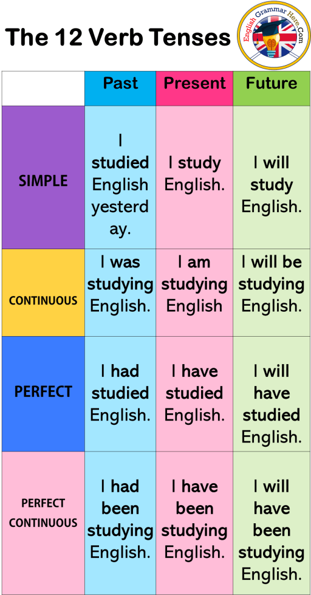

Eight Parts Of Speech
( ဝါစင်္ဂ ၈ မျိူး )
🔹Noun နာမ်
🔹Pronoun နာမ်စား
🔹Verb ကြိယာ
🔹Adjective နာမဝိသေသန
🔹Adverb ကြိယာဝိသေသန
🔹Preposition ဝိဘတ်
🔹Conjunction စကားဆက်
🔹Interjection အာေမဋိတ္
အထက် ဖော်ပြပါ အတိုင်း
English ဝါစင်္ဂ (၈ ) မျိူး ရှိရာ
ထိုအနက် မှ verb နှင့် သက်ဆိုင်သော
Tenses အကြောင်းများကို ကျွန်တော်
နားလည် သိထားသမျှဖြင့်
ရှင်းလင်း ပြောပြပေးချင်ပါသည်။
Tenses 12 မျိူး ရှိပါသည်။
Tense ဆိုတာက ကာလ ကို
ပြောခြင်းဖြစ်ပါသည်။
..၄င်း Tenses 12 မျိူးကို
Main Tense (၃) မျိူး နှင့်
Action (၄) မျိူးတို့ ဖြင့် မြှောက်ခြင်းဖြင့်
ရလာသည်။....
ထို့နောက် အောက်ပါ ပုံအတိုင်း
Tenses 12 မျိူး ရရှိလာပါမည်....
before

After
"
 🎥 video သင်ခန်းစာ
🎥 video သင်ခန်းစာ